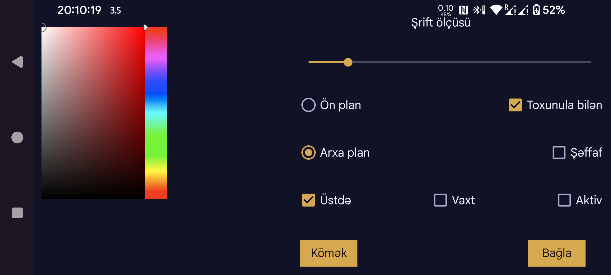

Burada Üzən qlükoza pəncərəsinin şrift ölçüsünü, mətnin və fonun rəngini təyin edə bilərsiniz.
Toxunula bilən: aktiv olduqda Üzən qlükoza pəncərəsini barmağınızla hərəkət etdirə, hərəkət etdirmədən uzun müddət basaraq kiçildə bilərsiniz. Bu seçim söndürülübsə, toxunuşlar Üzən qlükoza pəncərəsinin altında qalan tətbiqə ötürülür və həmin tətbiqdən istifadə edə bilirsiniz. Üzən qlükoza pəncərəsinə iki dəfə toxunmaqla da onu toxunuşlara cavabsız edə bilərsiniz.
Şəffaf: fon görünməz olur.
Üstdə: Juggluco ön planda olanda da Üzən qlükoza pəncərəsini göstərir.
Vaxt: qlükoza göstəricisinin vaxtını göstərir.
Aktiv: Üzən qlükoza funksiyasını aktivləşdirir.
Bu funksiyanı sol orta menyu → Üzən pəncərə bölməsindən də aktivləşdirə və söndürə bilərsiniz.
Üzən qlükoza pəncərəsinin ox olan tərəfinə toxunaraq Juggluco-ya keçə bilərsiniz. Qlükoza göstəricisi olan tərəfə iki dəfə toxunduqda pəncərə toxunuşlara cavab vermir. Göstəricinin üzərinə uzun müddət basdıqda yalnız kiçik qlükoza göstəricisi görünür və altındakı tətbiqlə işləmək mümkün olur; kiçik göstəriciyə toxunmaq onu yenidən böyüdür. Göstərici olan tərəfə toxunub barmağınızı hərəkət etdirməklə pəncərəni köçürə bilərsiniz.
Juggluco-nun digər tətbiqlərin üzərində görünməsi üçün xüsusi icazə tələb olunur. Wear OS və Android Automotive sistemlərində bu icazəni vermək üçün adb istifadə edilməlidir:
adb shell pm grant tk.glucodata android.permission.SYSTEM_ALERT_WINDOW
Bəzi saatlarda (məsələn, TicWatch Pro) icazəni bu yolla da vermək olar: Android/Wear OS tənzimləmələri → Apps & notifications → App info → Juggluco → Advanced → Display over other apps.